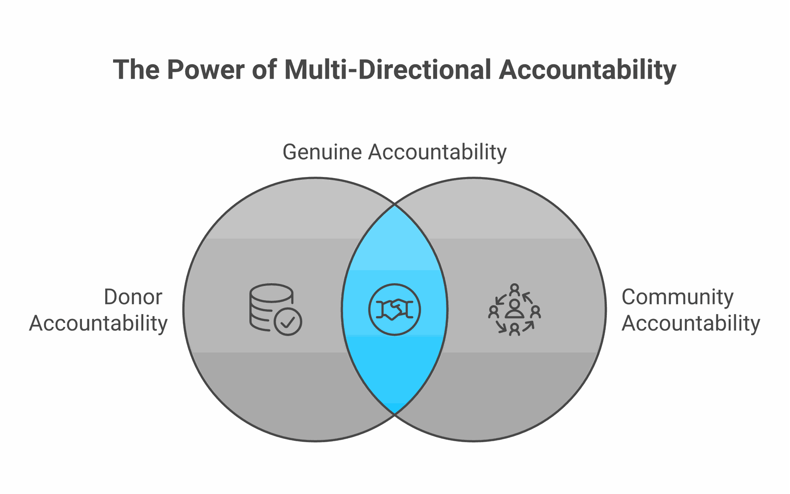

If you work in the development sector, you've almost certainly encountered the acronym MEAL. It appears in job titles, donor requirements, proposal templates, and countless training programmes. Understanding how MEAL evolved over the decades helps explain why it looks the way it does today. But ask ten practitioners what MEAL actually means in practice, and you'll likely get ten different answers.
That confusion isn't accidental. MEAL is both simpler than people make it sound and more nuanced than most introductions suggest. This guide aims to cut through the jargon and explain what each component actually involves—and why all four matter.
Breaking Down the Acronym
MEAL stands for Monitoring, Evaluation, Accountability, and Learning. Each component serves a distinct purpose, though in practice they overlap and reinforce each other. The "M&E" core has long sat on a shared evaluation vocabulary—most influentially the OECD Development Assistance Committee's evaluation criteria (relevance, coherence, effectiveness, efficiency, impact, and sustainability), which most major donors now expect evaluations to engage with.
Monitoring
Systematic tracking of activities and outputs. Are we doing what we planned? Are we reaching who we intended to reach?
Evaluation
Periodic assessment of results and impact. Is our work creating the changes we expected? What's working and what isn't?
Accountability
Answerability to stakeholders. How do communities influence our work? How do we respond to feedback and complaints?
Learning
Converting evidence into action. How do we use what we discover to improve our programmes and share with others?

Monitoring: The Foundation
Monitoring is the continuous, routine collection of data about your programme's activities and outputs. Think of it as keeping your finger on the pulse of implementation.
Good monitoring answers questions like: How many training sessions have we conducted? How many participants attended? What percentage were women? Are we on track to meet our targets? Where are we falling behind? Of course, the value of monitoring depends on data quality—a challenge that looks very different in the field than in the classroom.
The key distinction is that monitoring focuses on what you're doing (activities and outputs), not what difference it makes (outcomes and impact). You might monitor that you've distributed 1,000 bed nets, but monitoring alone won't tell you whether malaria rates have declined. Establishing that link takes evaluation: the Cochrane systematic review of insecticide-treated nets (Pryce, Richardson & Lengeler, 2018), pooling 23 randomised trials, found nets cut all-cause child mortality by about 17% compared with no nets—a finding no distribution log could have produced on its own.
Signs of Weak Monitoring
- Data collected but never reviewed until report deadlines
- No one can answer "how many beneficiaries this quarter?" without digging
- Different team members give different numbers for the same indicator
- Problems discovered only when it's too late to fix them
Evaluation: The Deeper Look
While monitoring tracks implementation, evaluation assesses results. It asks whether your programme is actually creating the changes you intended—and often, whether those changes would have happened anyway.
Evaluations can be formative (conducted during implementation to improve the programme) or summative (conducted at the end to assess overall results)—a distinction the philosopher Michael Scriven introduced in his 1967 essay "The Methodology of Evaluation" and that has anchored the field for over fifty years. They can focus on process (how well the programme was implemented), outcome (what changes occurred), or impact (what changes can be attributed to the programme).
Impact evaluation, in particular, requires thinking carefully about the counterfactual: what would have happened without your intervention? As J-PAL puts it, the counterfactual can never be observed directly, so impact methods work by constructing a comparison group that closely resembles those who received the programme. Approaches like quasi-experimental designs offer practical ways to approximate counterfactuals in field settings. This is where methodologies like randomised controlled trials, difference-in-differences, or regression discontinuity become relevant.
Accountability: The Two-Way Street
Accountability is perhaps the most misunderstood component of MEAL. It's not just about reporting to donors—though that matters. It's fundamentally about answerability to the communities you serve.
"Accountability means the people we're trying to help have genuine power to influence our work—not just receive it."
This framing is now codified in sector standards. The Core Humanitarian Standard defines accountability to affected people as "using power responsibly"—being answerable to communities for the decisions you make and how they affect people's lives. Meaningful accountability includes mechanisms for communities to provide feedback, lodge complaints, and participate in decisions that affect them. Effective community feedback loops are at the heart of this. It requires transparency about what you're doing, why you're doing it, and what resources you're working with.
Too many organisations treat accountability as a compliance checkbox rather than a genuine commitment to power-sharing. The result is feedback mechanisms that exist on paper but don't actually influence programming.

Learning: Closing the Loop
Learning is what transforms data into improvement. It's the "so what?" that connects all the monitoring data and evaluation findings to actual changes in how you work.
Organisations often collect extensive data and conduct elaborate evaluations, only to file the reports away and continue doing exactly what they were doing before. That's not learning—that's documentation. As 3ie has argued, for development institutions, learning requires far more than collecting data; monitoring data are routinely undervalued because they are never connected to the decisions that actually matter.
Genuine learning requires dedicated time for reflection, psychological safety to admit what isn't working, and organisational systems that actually incorporate insights into decision-making. It means treating failure as information rather than something to hide.
Questions for Learning
- What did we expect to happen? What actually happened?
- What surprised us? Why?
- What would we do differently if we started over?
- Who else needs to know what we discovered?
- What specific decisions will we make based on this evidence?
Why All Four Matter
Some organisations do excellent monitoring but never step back to evaluate whether their activities create real change. Others conduct rigorous evaluations but don't have the routine data to understand implementation. Many tick the accountability boxes without genuinely empowering communities. And most struggle to convert any of it into systematic learning.
MEAL only works as an integrated system. Monitoring feeds evaluation by providing the routine data that evaluations build upon. Evaluation informs accountability by giving communities and other stakeholders substantive information about results. Accountability enriches learning by surfacing perspectives that internal analysis might miss. And learning closes the loop by improving all three.
Getting Started
If your organisation is just beginning to build MEAL capacity, start with the basics: What questions do you actually need to answer? What decisions will you make differently with better evidence? Who are you accountable to, and what do they need to know?
Don't try to build a perfect system from scratch. Start simple, learn what works in your context, and iterate. The goal isn't a sophisticated MEAL framework that looks good on paper—it's a practical approach that actually helps you do better work.
ImpactMojo's MEAL courses and labs — including the MEL Lab — are designed to help you build these skills step by step, with examples drawn from the South Asian development context. Because every practitioner deserves access to the fundamentals.